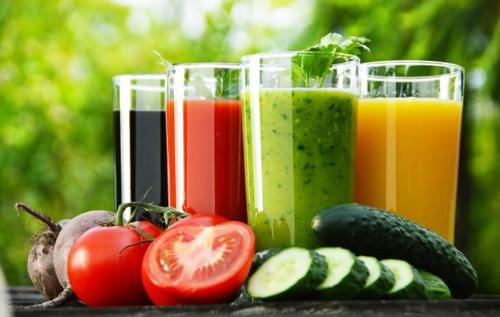
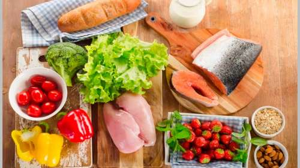

+ que culinaria; Un estilo de vida
Favoritos
Historial
Decoración
Jugos Dieteticos
29/10/2018
Jugo mañanero.
Ingredientes:
- Dos naranjas grandes y frescas.
- Media docena de uvas rojas.
- Seis fresas frescas.
- La mitad de una banana.
Para preparar este jugo dietético tienes que exprimir primero las naranjas, luego agregarlo en una licuadora, junto con la banana, las fresas y las uvas. Después mezclarlos todo y por ultimo sirve en un vaso para que puedas disfrutar de los increíbles beneficios de este jugo para bajar de peso.
Comidas Dieteticas
31/10/2018
Tiramisu Dietetico.
Ingredientes:
- 400 gramos queso ricota.
- 1 lata leche evaporada.
- 2 cucharadas gelatina.
- 75 gramos splenda.
- galletas dieteticas de vainilla
- 1 y 1/2 tazas café descafeinado fuerte
- 2 cucharadas cocoa
- 1 lata pequeña de crema de leche light
Preparar el café bien fuerte con esplenda, según el gusto. debe quedar apenas dulce. Reservar. Hidratar la gelatina en agua. Batir la leche evaporada con la crema de leche mas la splenda y llevar a refrigerar durante unos 20 minutos. Sacar del refrigerador y aplicar la gelatina. batir hasta que se homogeneicen. Agregar el queso ricotta y verificar el sabor. agregar mas splenda si lo desea mas dulce. Tomar un molde refractario y colocar una capa de galletas mojadas en el café. Aplicar la capa de crema resultante, luego otra capa de galletas y crema y sucesivamente hasta acabar la crema. Debe quedar por ultimo una capa de crema. Aplicar una capa de cocoa cernido en la superficie. La salsa para decorar se elabora con cocoa y el cafe restante. Llevar a refrigeración unas 4 horas mínimo y servir.